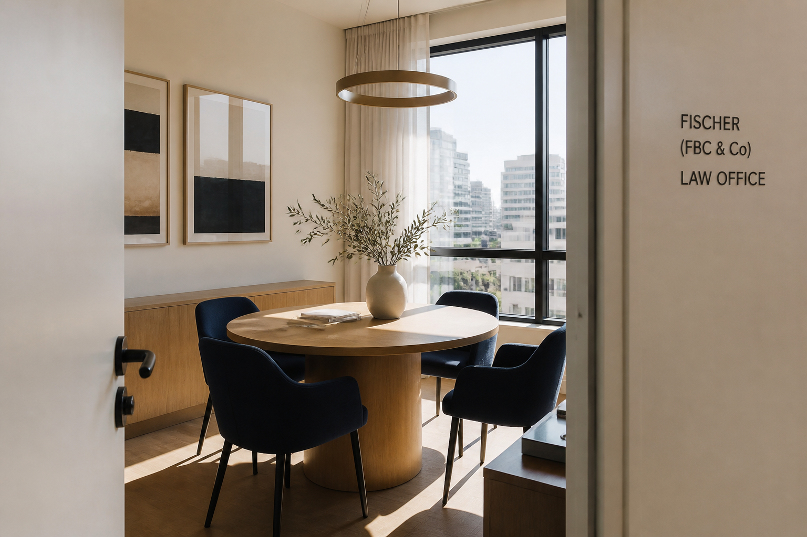

בהירות
אנחנו מתרגמים את ההליך לשפה יומיומית. תדעו מה האפשרויות, מה הסיכונים, ומה הצעד הבא.
כהן ושות׳ נוסד בשנת 2014 בתל אביב. מאז אנחנו מלווים משפחות, עובדים, מעסיקים ורוכשי דירות, באותה גישה: מקצועיות בלי ריחוק.
עו״ד אבי כהן הקים את המשרד אחרי שנים במשרדים גדולים, שבהן ראה לקוחות יוצאים מפגישות עם יותר שאלות משהגיעו איתן. הרעיון היה פשוט: משרד שבו אפשר להרים טלפון, לקבל הסבר אנושי, ולא להרגיש מספר בתיק.
היום המשרד מונה ארבעה עורכי דין ושתי מתמחות. אנחנו לא מנסים להיות הכול לכל אחד. אנחנו עמוקים בשלושה תחומים: משפחה, עבודה ונדל״ן, ומקפידים שכל תיק יטופל בידי מי שמכיר אותו באמת.

אנחנו מתרגמים את ההליך לשפה יומיומית. תדעו מה האפשרויות, מה הסיכונים, ומה הצעד הבא.
זמינים בוואטסאפ ובמייל. לא מחכים לשבוע הבא כדי לענות על שאלה שבוערת הערב.
לא כל סכסוך צריך מלחמה. אנחנו נלחמים כשצריך, ומחפשים הסכמה כשאפשר, במיוחד כשיש ילדים בתמונה.
ארבעה עורכי דין ושתי מתמחות. היכרות קרובה, לא מחלקה אנונימית.

משמורת, מזונות והסכמים, בגישה רגישה ומדויקת.

ייצוג עובדים ומעסיקים בסכסוכי עבודה ובהסכמים.

ויצמן 14, תל אביב. חלל שקט לפגישות, בלי תפאורה של בית משפט ובלי תחושת תאגיד.
מגיעים לפגישת היכרות? נשלח אישור, נסביר איך מגיעים, ונדאג שיהיה זמן אמיתי לשיחה, לא רבע שעה בין ישיבות.
בואו נדבר